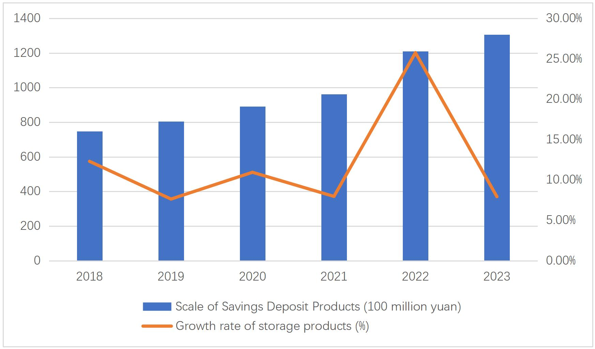

Research Question研究问题
The paper asks why customers choose or avoid a bank's personal finance products when many products look similar across banks. Instead of treating marketing as only advertising, I model purchase intention as a function of product usability, perceived usefulness, comparative advantage, perceived risk, service experience, and customer involvement. 论文研究的是：当各家银行个人理财产品越来越相似时，客户为什么选择或不选择某家银行。这里没有把营销只理解为广告，而是把购买意愿建模为易用性、感知有用性、比较优势、感知风险、服务体验和客户涉入度的函数。
\[ PI_i=\alpha+\beta_1 PE_i+\beta_2 PU_i+\beta_3 CA_i+\beta_4 PR_i+ \beta_5 SE_i+\beta_6 PII_i+\gamma Z_i+\varepsilon_i \]
In plain language, the dependent variable is willingness to buy. The explanatory variables describe what customers feel about the product: whether it is easy to use, useful, different from competitors, low-risk, well-serviced, and worth paying attention to. 直观来说，被解释变量是客户购买意愿；解释变量描述客户对产品的感受：是否易用、是否有用、是否有差异化、风险是否可接受、服务体验如何、以及客户是否愿意主动关注。
Data数据
The empirical part uses a questionnaire survey of Bank A customers in Zhejiang. The questionnaire was distributed through local contacts and collected from a broad mix of occupations, ages, education levels, and income groups. 实证部分使用针对浙江地区 Bank A 客户的问卷调查。问卷通过当地联系人扩散，样本覆盖不同职业、年龄、教育水平和收入群体。
| Dimension | Sample detail |
|---|---|
| Gender | 365 male (51%), 347 female (49%) |
| Region | 78% from Zhejiang; 67% from Hangzhou provincial-capital area |
| Education | 51% undergraduate, 29% college, 9% master's, 5% PhD or above |
| Income | 51% monthly income between RMB 5,000 and 10,000; 27% between RMB 10,000 and 20,000 |


Variables and Hypotheses变量与假设
The model combines the Technology Acceptance Model with behavioral-finance and consumer-finance framing. Each construct is measured through Likert-style questionnaire items. 模型把技术接受模型与行为金融、消费者金融框架结合起来。每个变量都由 Likert 量表题项测量。
- H1/H2: perceived ease of use and perceived usefulness should increase willingness to purchase.H1/H2：感知易用性和感知有用性应提升购买意愿。
- H3: product comparative advantage should increase purchase intention.H3：产品比较优势应提升购买意愿。
- H4: perceived risk should reduce willingness; in the questionnaire coding, higher risk-score responses mean lower concern.H4：感知风险会抑制购买意愿；在问卷编码中，较高风险维度分数代表更低担忧。
- H5/H6: service experience, satisfaction, and customer involvement should increase purchase intention.H5/H6：服务体验、满意度与客户涉入度应提升购买意愿。
Questionnaire Quality Tests问卷质量检验
Before running the regression, the paper checks whether the questionnaire dimensions are reliable enough to use as explanatory variables. 在回归之前，论文先检验问卷维度是否具有足够信度与效度，能否作为解释变量使用。
| Construct | Cronbach's alpha | Interpretation |
|---|---|---|
| PE: perceived ease of use | 0.884 | Reliable |
| PU: perceived usefulness | 0.931 | Reliable |
| CA: comparative advantage | 0.886 | Reliable |
| PR: perceived risk | 0.870 | Reliable |
| SE: service experience and satisfaction | 0.867 | Reliable |
| PII: involvement | 0.860 | Reliable |
Regression Results回归结果
The regression explains purchase intention using demographics and the six questionnaire constructs. The model fit is high for a survey-based marketing study: R² = 0.855 and adjusted R² = 0.851, with F = 278.595 and p = 0.000. 回归用人口统计变量和六个问卷维度解释购买意愿。对于问卷型营销研究，模型拟合度较高：R² = 0.855，调整后 R² = 0.851，F = 278.595，p = 0.000。
| Variable | Coefficient | t-value | p-value | VIF |
|---|---|---|---|---|
| Perceived ease of use | 0.291 | 5.495 | 0.000 | 7.130 |
| Perceived usefulness | 0.176 | 3.683 | 0.001 | 5.805 |
| Comparative advantage | 0.200 | 4.529 | 0.000 | 4.940 |
| Perceived risk score | 0.237 | 5.228 | 0.000 | 5.243 |
| Experience and satisfaction | 0.132 | 2.857 | 0.007 | 5.414 |
| Involvement | 0.334 | 5.813 | 0.000 | 1.395 |
Involvement has the largest coefficient among the main constructs, followed by perceived ease of use and perceived risk score. That means Bank A should not only redesign products; it also needs to increase how often customers actively notice, use, and participate in its wealth-management ecosystem. 在主要解释变量中，涉入度系数最大，其次是感知易用性和感知风险得分。这说明 Bank A 不能只做产品设计，还需要提高客户对理财生态的关注、使用和参与频率。
Strategy Implications策略含义
- Product strategy: involve innovative customers in product feedback and make product differences more visible.产品策略：让创新型客户参与产品反馈，并让产品差异更清晰可见。
- Promotion strategy: segment customers by involvement and income instead of sending one uniform promotion message.促销策略：按涉入度和收入分层，而不是统一推送同一种促销信息。
- Service strategy: collect post-service feedback, because experience and satisfaction remain statistically significant.服务策略：加强服务后反馈收集，因为体验和满意度在回归中仍然显著。
- Channel strategy: integrate app, branch, and relationship-manager channels into one clearer customer journey.渠道策略：整合 App、网点和客户经理渠道，形成更清晰的客户旅程。
Tools: questionnaire design, SPSS-style reliability and validity testing, multiple linear regression, customer segmentation, marketing strategy synthesis. 工具：问卷设计、SPSS 风格信度与效度检验、多元线性回归、客户分层、营销策略整合。